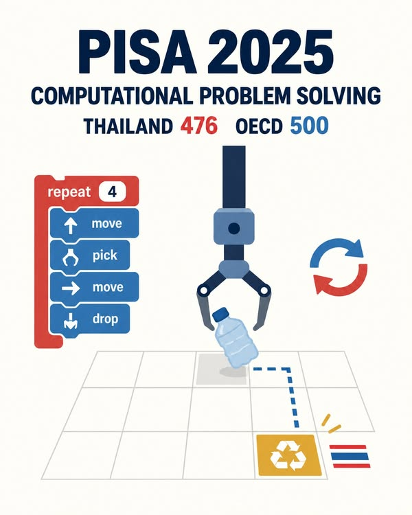

PISA 2025: จุดแข็งที่น่าต่อยอดของเด็กไทยด้าน Computational Problem Solving
{kind=link}

ผล PISA 2025 มีตัวเลขหนึ่งที่น่าสนใจมาก: นักเรียนไทยได้ 476 คะแนนด้าน Computational Problem Solving ขณะที่ค่าเฉลี่ย OECD อยู่ที่ 500 คะแนน ต่างกัน 24 คะแนน
ช่องว่างนี้ยังหมายความว่าไทยต่ำกว่าค่าเฉลี่ย OECD แต่มีขนาดเล็กกว่าช่องว่างในวิทยาศาสตร์ 50 คะแนน คณิตศาสตร์ 56 คะแนน และการอ่าน 69 คะแนน จึงเป็นสัญญาณที่ควรทำความเข้าใจ ไม่ใช่เพื่ออวยว่าระบบการศึกษาไทยดีแล้ว แต่เพื่อค้นหาศักยภาพที่เราอาจต่อยอดได้
ค่าเฉลี่ย OECD ไม่ใช่ค่าเฉลี่ยของทุกประเทศที่เข้าสอบ
OECD คือองค์การเพื่อความร่วมมือทางเศรษฐกิจและการพัฒนา ปัจจุบันมีสมาชิก 38 ประเทศ ค่า OECD average จึงเป็นค่าเฉลี่ยของประเทศสมาชิก ไม่ใช่ค่าเฉลี่ยของประเทศและเขตเศรษฐกิจทั้งหมดที่เข้าร่วม PISA
ไทยยังไม่ได้เป็นสมาชิก OECD แต่ OECD เปิดการเจรจารับไทยเข้าเป็นสมาชิกในเดือนมิถุนายน 2024 และกำลังอยู่ในกระบวนการตรวจประเมินกฎหมาย นโยบาย และมาตรฐานตามแผนภาคยานุวัติ
ไทยอยู่ตรงไหนในแต่ละด้าน
เมื่อจัดอันดับจากประเทศและเขตเศรษฐกิจที่มีคะแนน โดยไม่นับแถว OECD average และใช้อันดับจากคะแนนจำนวนเต็มที่เผยแพร่ ผลของไทยคือ อันดับ 40 ร่วมจาก 85 แห่ง ใน Computational Problem Solving ด้วย 476 คะแนน
ส่วนวิทยาศาสตร์อยู่ที่ 432 คะแนน อันดับ 53 จาก 91 แห่ง; คณิตศาสตร์ 407 คะแนน อันดับ 57 ร่วมจาก 90 แห่ง; และการอ่าน 392 คะแนน อันดับ 59 ร่วมจาก 90 แห่ง จำนวนผู้เข้าร่วมที่มีคะแนนไม่เท่ากันในแต่ละด้าน จึงต้องระบุฐานของอันดับทุกครั้ง
Recycling Claw วัดอะไร
ตัวอย่างข้อสอบที่ OECD เปิดเผยชื่อ Recycling Claw ให้นักเรียนสร้างหรือแก้โปรแกรมแบบบล็อกเพื่อควบคุมแขนกลคัดแยกวัตถุ นักเรียนสามารถรันโปรแกรม ดูผล ย้อนกลับมาแก้ไข และใช้ตัวอย่างช่วยเรียนรู้แนวคิดอย่าง repeat และเงื่อนไขได้
จึงไม่ใช่ข้อสอบที่วัดว่าเด็กจำภาษา Python หรือ C++ ได้หรือไม่ แต่กำลังดูว่าเด็กแยกปัญหาเป็นขั้นตอน มองหารูปแบบ สร้างวิธีแก้ ทดลองจากผลลัพธ์ ตรวจหาข้อผิดพลาด และปรับวิธีแก้ให้มีประสิทธิภาพขึ้นได้เพียงใด
คะแนนให้กับกระบวนการ ไม่ใช่เพียงคำตอบสุดท้าย
เกณฑ์ของโจทย์ Learn 3 ให้คะแนนแบบหลายระดับ หากโปรแกรมขยับวัตถุได้ก็มีคะแนนบางส่วน หากนำวัตถุไปยังตำแหน่งเป้าหมายได้จะได้คะแนนเพิ่ม และระดับสูงสุดต้องทำสำเร็จด้วยโปรแกรม 8 บล็อก โดยมีบล็อกทำซ้ำอย่างน้อยสองชุดตามเงื่อนไขที่กำหนด
OECD อธิบายด้วยว่าแบบประเมินนี้เปิดให้นักเรียนใช้ feedback และทรัพยากรระหว่างทำข้อสอบ คะแนนจึงสะท้อนทั้งความรู้เดิมและความสามารถในการเรียนรู้ ปรับตัว และตอบสนองภายในสถานการณ์ทดสอบ ซึ่งแตกต่างจากการตีความคะแนนวิชาหลักบางส่วน
จุดแข็งนี้ยังมีเพดานจากทักษะพื้นฐาน
คะแนน 476 อาจสะท้อนว่าเด็กไทยมีศักยภาพด้านการทดลอง การคิดเป็นขั้นตอน และการแก้ปัญหาผ่านเครื่องมือดิจิทัลมากกว่าที่คะแนนวิชาพื้นฐานเพียงอย่างเดียวทำให้เราเห็น แต่คำว่า “อาจ” สำคัญ เพราะคะแนนเฉลี่ยระดับประเทศไม่สามารถอธิบายสาเหตุได้ด้วยตัวเอง
ในเวลาเดียวกัน การอ่าน คณิตศาสตร์ และวิทยาศาสตร์ยังเป็นฐานสำคัญของการแก้ปัญหาที่ซับซ้อน จุดแข็งด้าน computational problem solving จึงไม่ใช่เหตุผลให้ละเลยวิชาพื้นฐาน แต่เป็นโอกาสออกแบบการเรียนรู้ที่ใช้การสร้าง ทดลอง และแก้ไขเป็นสะพานกลับไปเสริมทักษะเหล่านั้น
คำถามสำคัญจึงไม่ใช่เพียงว่า “ทำไมคะแนนวิชาหลักของเราจึงต่ำ” แต่รวมถึงว่า เราจะต่อยอดจุดแข็งด้านการแก้ปัญหานี้อย่างไร โดยไม่ปล่อยให้ข้อจำกัดด้านการอ่าน คณิตศาสตร์ และวิทยาศาสตร์กลายเป็นเพดานของเด็กไทย
ข้อมูลผลการประเมินต้นทาง PISA 2025 Results: Thailand Country note และตารางเปรียบเทียบผลของไทยจาก OECD ตัวอย่างข้อสอบและเกณฑ์ให้คะแนน Recycling Claw ดูโจทย์ที่เปิดเผย ขั้นตอนการเรียนรู้ และ extended partial credit scoring จาก OECD